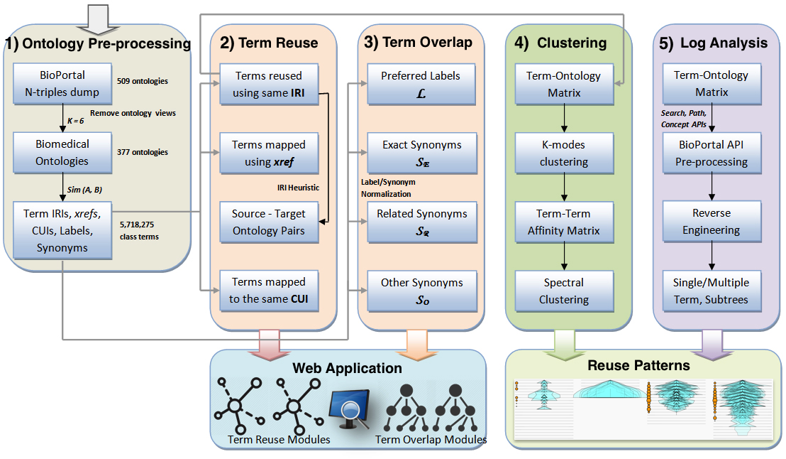

Check Similar Terms
Reuse Dependencies Visualization
Overlap Visualization
BioPortal Import Plugin Log Analysis Visualization
Data Files
About
Ontology Term Overlap and Reuse
Paper:
A Systematic Analysis of Term Reuse and Term Overlap across Biomedical Ontologies
